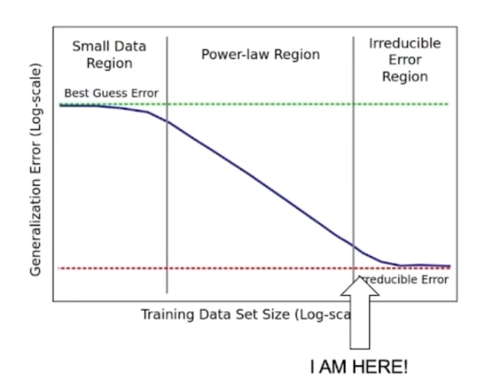

杂乱写写
为什么写呢？其实是因为昨天有感而发，但由于实在日程太紧，有点 Burn out. 推脱到了今天，虽然没了那份心情，但想想还是记录下吧。
最近特别依赖 codex. 相比一年前，其实还在复制粘贴代码在 Web 和 GPT 老师对线，那时候，由于上下文也很短，只能粘贴部分代码，那么显然解决不了跨度太大的问题，又或者要很多很多轮对话，但总归还是帮助了很多，理解代码的速度太快了！这样的Zero-shot的能力太神奇了。又过了几个月，才真正接触用上 Vibe coding. 那时候用的是 Cursor，天哪，当大模型极致的 Zero-Shot 遇上本地项目完整的上下文，碰撞出了巨大的火花，不再需要一点点粘贴，模型在拥有对代码完整的理解之后，生成代码、改 bug 的效率和能力进一步提升，但 Vibe coding 写出来还是偏 toy 的项目，输入目的，然后 Accept All，仅此而已。而现在，甚至不是 Vide coding 了，而是 Agentic coding，Claude Code / Codex 作为代表，已经形成了成熟的 Agent 工作流，规划、实现、Review、Test，代码能力大大提升，写出来的几乎找不到什么问题，往往能很好的实现你的需求，可以说，写代码这件事上，我已经被完全替代。
我是很感激 Agentic-Coding 的出现的，我的代码能力很弱，而他，能够很好的帮助我实现一些想法。
然而，在昨天，一早上用起来了，感叹 Agentic coding 的强大，不断迭代着，但是项目很快超出了我的掌控范围——即使我很小心谨慎，每一次迭代都先通过 Chat 规划下一步的计划并大致理解给出的建议再真正应用传递给 Agent——仍然出现了我难以理解的 bug，或者说这并不是一个 bug，而是一个设计问题，一个看似不合理的测试结果。我慌张了，一路 Agentic-coding 顺风顺水，突然遇到了问题，我必须马上解决他。很可惜的是，那时我对这个测试结果的来源（或者说调用链）理解的并不到位，却直接上手，一眼以为是某个内存资源模拟的不到位，Queue Wait 时间特别长，因为我笃定地向这个方向前进，并提示 Agent 寻找这里的 bug，然而经过了多轮的迭代——这个问题仍然存在。我知道，我应该要停下了。我应该要先理解这一结果是如何产生的，正如以往古法 debug 一样，核心思想并没有变化，你作为项目的掌控者规划者，还是必须小心的不让项目脱离你的掌控。好在这一过程 Agent 也能帮你，我先借助 Agent 理解这一指标的真正含义与来源，并让其解释为什么会产生这样不合理的指标，若是现有子指标不足以判断，则额外记录新的指标来识别这一问题。很快，在这个方向一轮迭代，便定位到了真正问题，这并不是内存模型的 Bound，而是计算资源的 Bound，之前被错误的方向引导就是因为错误地理解了 queue_wait_percent 这个指标，占据了 98%，然后是访存中的 98%，而不是总 Cost 的 98%. Debug 的核心思路还是没有变，你始终要成为项目的掌控者才能更好的指挥 Agent.

alt text
但这一过程也许又会很快被替代，Opencode 的 Multi-Agent 工作流，似乎已经能够形成 Plan-Implementation-Review-Test 的不断迭代流程，也许一句话，他就能不断烧 token 完成一个大任务。不过，工具终究还是工具，人的视野决定了你能怎么用工具。正如最近 jyy 老师在优博之路分享的，认知视野也是像大模型的训练过程一样，Pre-Train，Train，SFT Post-Train 等等。遵循着 Power Law，而我，我想还没进入 Power Law 的区间，目前只接受了很少的数据（文献/CS体系结构），这部分仍然不够，我能做的，只是不断接受试错/阅读/思考，接受新的数据的训练，当进入 Power Law 的区间，我想会那是明显螺旋上升的阶段。最后，害怕是本能，面对，是选择。